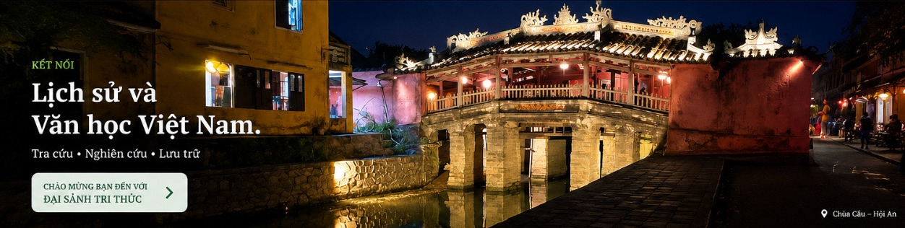

LỊCH SỬ VIỆT NAM
Hệ thống hóa toàn bộ lịch sử Việt Nam.
KHÁM PHÁ →
Hệ thống hóa toàn bộ lịch sử Việt Nam.
KHÁM PHÁ →Hệ thống hóa theo các giai đoạn.
KHÁM PHÁ →Thông tin và tác phẩm các tác giả.
TRA CỨU →Thông tin và nội dung các tác phẩm.
TRA CỨU →Dòng chảy lịch sử và văn học.
XEM NGAY →Các công trình nghiên cứu, bình luận, phân tích.
KHÁM PHÁ →